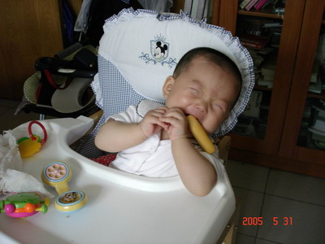

曼曼9个半月时体重9.45公斤，身长74cm，头围45cm，胸围43.8厘米。
曼曼满9个月时，突然冒出了一颗小牙，让一直期盼她长牙的妈妈激动不已。不过曼曼的牙长得很慢，长了一个月，也只是下面的两颗牙长到一半，上面的牙还没有踪影。
曼曼这个月爬得很好了。她特别喜欢的一个游戏就是让妈妈在后面叫着她的名字追她，她大声的笑着飞快的手脚并用爬过整个客厅，然后再回头冲着妈妈胜利的笑。
曼曼现在也会自己扶着东西站起来，有时松开手也能自己站1分钟。不想站的时候，她会自己扶着慢慢的蹲下去，高兴的时候笑得特别灿烂，不高兴的时候会打人、扔东西、大叫、发脾气。

九个半月的时候，曼曼肚子有点不好，拉芝麻酱似的把把，一天多的时候拉四、五次，而且一直持续了一个月才好。可能是因为天气太热了，肠胃失调。
现在问她“谁是曼曼呀”，她就会笑咪咪的举起一只手使劲拍自己的胸脯，模样十分可爱。
曼曼有一个很喜欢的布娃娃长颈鹿，问曼曼“长颈鹿在哪呢？去拍拍长颈鹿睡觉觉”，她就会四处看，看到长颈鹿之后爬过去，把长颈鹿抱在自己胸前，轻轻地拍着长颈鹿，边拍边笑咪咪的乐。